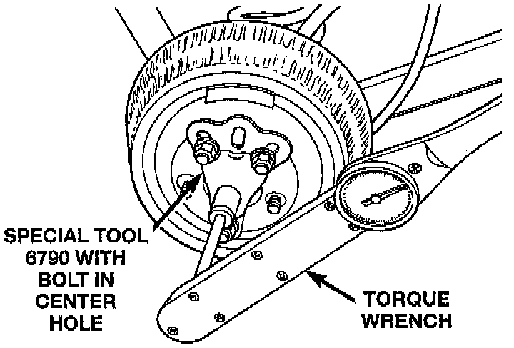

Trac-Lok Operational Test
WARNING: When servicing vehicles with a trac-lok differential do not use the engine to turn the axle and wheels. Both rear wheels must be raised and the vehicle supported. A trac-lok axle can exert enough force if one wheel is in contact with a surface to cause the vehicle to move.
The differential can be tested without removing the differential case by measuring rotating torque. Make sure brakes are not dragging during this measurement.
1. Place blocks in front and rear of both front wheels.
2. Raise one rear wheel until it is completely off the ground.
3. Engine off, transmission in neutral, and parking brake off.
4. Remove wheel and bolt Special Tool 6790, or equivalent to studs.
5. Use torque wrench on special tool to rotate wheel and read rotating torque.
6. If rotating torque is less than 22 Nm (30 ft. lbs.) or more than 271 Nm (200 ft. lbs.) on either wheel the unit should be serviced.